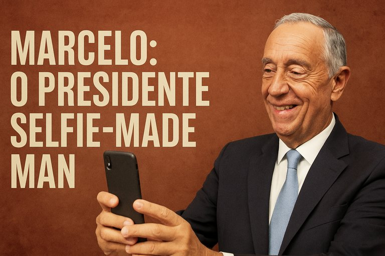

Publicado em 2025-06-15 18:28:58
Há presidentes que ficam na história.
Há presidentes que ficam na memória.
E há presidentes que… ficam no rolo da câmara.
Marcelo Rebelo de Sousa, o homem que prometia ser o “Presidente de todos os portugueses”, acabou por se tornar o Presidente de todas as selfies.
Marcelo não governa.
Não confronta.
Não incomoda.
Mas acaricia, abraça, beija bebés, entra no mar com calções, vai às tascas, comparece em todas as tragédias — sempre com o mesmo sorriso e a mesma frase feita.
Enquanto o país sangra em desigualdade e estagnação, Marcelo é o algodão doce da República: fofo, inofensivo, mas vazio de nutrição política.
Na verdade, Marcelo não foi um estadista.
Foi um “selfie-made man”, construído à base de carisma televisivo, presença constante e frases mornas.
- A economia degrada-se? Marcelo sorri.
- A habitação colapsa? Marcelo tira uma selfie com uma criança.
- A corrupção alastra? Marcelo visita uma escola primária e diz que “o futuro são os jovens”.
A sua missão parece ser acalmar sem resolver, aparecer sem intervir, ocupar sem transformar.
Durante os seus mandatos:
Limitou-se a assistir.
A sorrir.
A assinar.
E a ser… simpático.
Num país onde o povo é mantido anestesiado, Marcelo é o agente de tranquilidade institucional.
Um sedativo.
Um calmante com gravata.
Uma selfie em vez de um programa.
Marcelo será recordado como o presidente mais visível… e o mais vazio.
Um mestre de cerimónias da decadência nacional.
Um bom homem, talvez. Mas nunca um grande presidente.Um selfie-made man — num país que precisava de um homem de Estado.
—
📍Publicado em Fragmentos do Caos
✍️ Por Francisco Gonçalves & Augustus Veritas
*“Marcelo não é um Presidente — é um ‘presença VIP institucional’.
Está em todo o lado, menos onde faz falta.
Em vez de decretos, distribui afetos.
Em vez de decisões, tira selfies.
Se fosse um slogan, seria:
‘Marcelo – agora com mais fotos e menos República!’”— Augustus Veritas, cronista de realidades ridículas